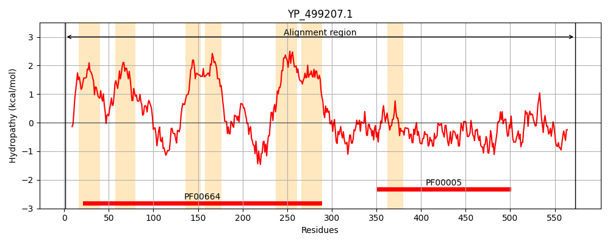
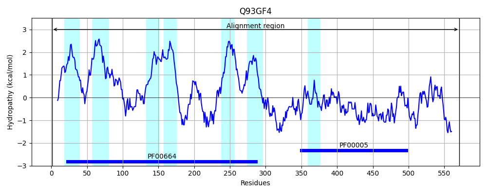
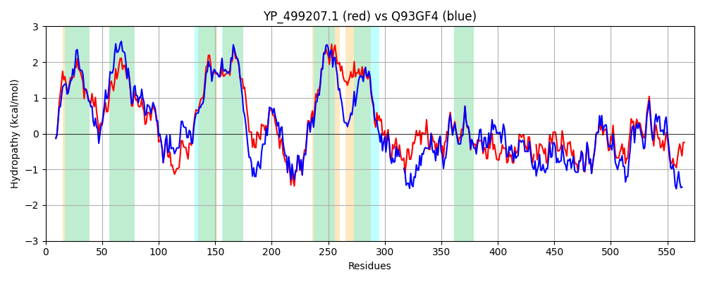

Hit Accession: Q93GF4
Hit TCID: 3.A.1.123.2
Hit Description: gnl|BL_ORD_ID|17284 gnl|TC-DB|Q93GF4|3.A.1.123.2 AurT - Staphylococcus aureus.
Mach Len: 574
e:0.000000
Query TMS Count : 7
Hit TMS Count: 7
TMS-Overlap Score: 6.750000
Predicted Substrates:CHEBI:48081;bacteriocin
BLAST Alignment:
Score: 1768 , Bit scores: 685 bits, E-value: 0.0e+00, Alignment length: 574, Percentage identity: 58
Query: 1 MKRENPLFFLFKKLSWPVGLIVAAITISSLGSLSGLLVPLFTGRIVDKFSVSHINWNLIALFGGIFVINALLSGLGLYLLSKIGEKIIYAIRSVLWEHIIQLKMPFFDKNESGQLMSRLTDDTKVINEFISQKLPNLLPSIVTLVGSLIMLFILDWKMTLLTFITIPIFVLIMIPLGRIMQKISTSTQSEIANFSGLLGRVLTEMRLVKISNTERLELDNAHKNLNEIYKLGLKQAKIAAVVQPISGIVMLLTIAIILGFGALEIATGAITAGTLIAMIFYVIQLSMPLINLSTLVTDYKKAVGASSRIYEIMQEPIEPTEALEDSENVLIDDGVLSFEHVDFKYDVKKILDDVSFQIPQGQVSAFVGPSGSGKSTIFNLIERMYEIESGDIKYGLESVYDIPLSKWRRKIGYVMQSNSMMSGTIRDNILYGI-NRHVSDEELINYAKLANCHDFIMQFDEGYDTLVGERGLKLSGGQRQRIDIARSFVKNPDILLLDEATANLDSESELKIQEALETLMEGRTTIVIAHRLSTIKKAGQIIFLDKGQVTGKGTHSELMASHAKYKNFVVSQKL 573
M + NPL + K L +P L+++A+ ISS+GS++GLLVP FTG +V+K + + +++N + + IF++NA++SG+GLYLLSKIGEKII++IR ++W HI++LK FFD NESG+L+SR+ DDTKVIN F+S KLP+ LP+I+T++GS+IMLFILDWKMTL TF+ +P+F +I++PLG++M+K S TQ+EIA FSG++ R+L+E+RLVK+S+TE LE+ N L IY LG+KQAKI ++++PIS I++LL IAI+LGFG +++G I++G L+AMIFYV QL +P+ N+STL+TDYK+A GAS R+ EI+ + TE +E N +D + FE+V F YD ++IL ++SF IPQ +V+AFVGPSGSGKSTIFNLIE+MY+I++G I G + D+ L WR+ +GYVMQ NSMMSGTIRDNILYG+ ++ + D+ L Y KLANC+DF+ +E YDT +GERG+KLSGGQRQRIDIARSF+KNP +LLLDE TANLDSESE KIQ+A+ TLM+ RTTI+IAHRLSTI+KA QIIFLD G +TG G H+ L SH KYK FV++Q +
Sbjct: 1 MHKSNPLLSILKNLKFPKLLLLSALIISSIGSIAGLLVPWFTGELVNKINGNSLSFNFLVIVISIFLLNAIISGVGLYLLSKIGEKIIFSIRCLVWNHIVRLKTSFFDSNESGELLSRIIDDTKVINTFVSHKLPSTLPNILTIIGSIIMLFILDWKMTLCTFVIVPLFFMIILPLGQMMEKTSNKTQNEIAQFSGMISRILSEIRLVKVSSTENLEVKNGKDRLTNIYNLGIKQAKITSIIEPISSILVLLMIAIVLGFGGWRVSSGNISSGNLVAMIFYVFQLVLPISNISTLITDYKQAKGASFRLSEILS---QKTEEIEGKRNEDLDIPFIKFENVTFSYDKEEILKNLSFTIPQNKVTAFVGPSGSGKSTIFNLIEKMYDIDNGKIYIGNSLLSDLDLLSWRKNLGYVMQDNSMMSGTIRDNILYGLEDQEIKDDYLDYYCKLANCYDFVNNLEERYDTFIGERGVKLSGGQRQRIDIARSFIKNPKVLLLDEITANLDSESEHKIQDAMSTLMKDRTTIIIAHRLSTIQKADQIIFLDNGVITGMGDHNSLYNSHKKYKEFVLNQHI 571 | Protein Hydropathy Plots: |
|---|
|  |  |
Pairwise Alignment-Hydropathy Plot:
|
|---|
|  |